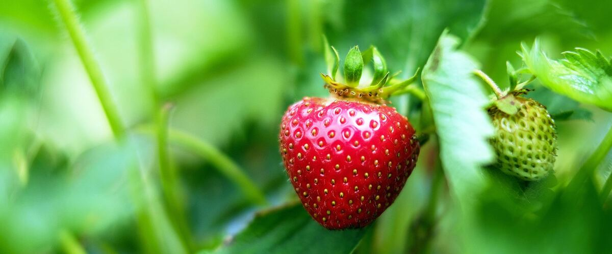

Plant guides · Oregon · Washington · Idaho
Growing Strawberries
June-bearing or everbearing? How to plant strawberries, keep them out of the mud, and keep a patch productive for years.
Northwest strawberries have a reputation, and they've earned it. The mild summers and cool nights produce berries with deep flavor, and Northwest plant breeders have developed varieties suited to this climate for decades. A small patch is easy to start and, with a little care, keeps producing for several years.
Choose your type
- June-bearing plants produce one big crop over a few weeks in early summer. They're the classic choice for jam and freezing. Hood, an older Oregon-bred variety, is famous for flavor; Shuksan and Tillamook are other Northwest-bred options.
- Day-neutral plants, often sold as everbearing, produce smaller flushes from early summer into fall. Albion and Seascape are common choices. They're good for snacking and for small spaces like containers.
Many gardeners grow some of each: June-bearers for a big harvest and day-neutrals to keep berries coming.
Planting
Plant in early spring, in full sun, in soil that drains well. Strawberries hate wet feet, so raised beds or raised rows are a big help in rainy areas. Space plants about 12 to 18 inches apart.
Depth matters more than with most plants. Set each plant so the crown, the thick point where the leaves meet the roots, sits right at the soil surface. Buried crowns rot; crowns set too high dry out.
The first year
On June-bearers, pinch off all the flowers the first year. On day-neutrals, pinch flowers until about early July, then let them fruit. Both feel painful, but plants that put their first season into roots and leaves produce far more afterward.
Mulch and keep the berries clean
Gray mold, a fuzzy gray rot on the berries, is the main strawberry problem in wet Northwest springs. A layer of straw under the plants keeps berries off the soil and dries out faster after rain. Pick ripe berries every couple of days, remove any moldy ones from the patch, and give plants enough space for air to move through.
Slugs love strawberries too. Check our guide to Northwest slugs for safe ways to control them.
Runners and renewing the patch
Strawberries send out runners, long stems that root into new plants. Let some fill gaps in the row, but cut most of them off so the bed doesn't turn into a crowded mat. After June-bearers finish fruiting, many gardeners renew the bed: mow or cut the old leaves, thin out crowded plants, weed, and feed lightly so the plants regrow for next year.
Even well-kept patches slow down after three or four years. Start a fresh bed in a new spot with healthy new plants, and the cycle continues.